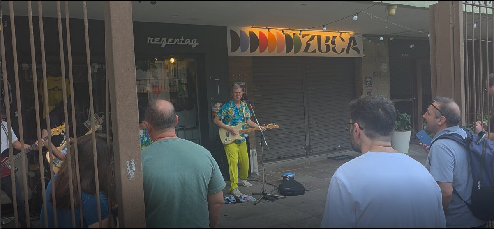

Quem é Wander Wildner
Wanderley Luiz Wildner nasceu em Venâncio Aires, no Rio Grande do Sul, em 20 de setembro de 1959. Filho de alemães, ficou conhecido nos anos 80 como vocalista dos Replicantes, uma das bandas mais influentes do punk rock gaúcho e nacional, pela qual passou em dois períodos diferentes. [1]
Em 1995 começou a carreira solo e ganhou o apelido de Rei do Punkbrega, a mistura de atitude punk com a canção romântica popular que virou a sua marca. [1]
Além de músico, é escritor. Publicou Aventuras de um PunkBrega, depois Canções Iluminadas de Amor (2022), e reuniu os dois em Wander Wildner Rodando el Mundo, um livro de caráter autobiográfico. Em 2025 lançou o álbum Diversões Iluminadas, com 12 versões de clássicos que vão de Bob Marley a Iggy Pop, passando por Caetano Veloso e Ednardo. [2] [3]
A própria apresentação do artista resume a fase atual: depois de surfar as ondas do punk, ele agora distribui “canções iluminadas de amor incondicional”. [2]
O pocket show
- Data
- Domingo, 20/09/2026
- Horário
- 16h
- Local
- Rua João Telles, 540, Bom Fim, Porto Alegre
- Motivo
- Aniversário de 67 anos
Wander escolheu comemorar o aniversário no lugar que tem tudo a ver com a sua história: a Rua João Telles, colado ao Bar Ocidente, na esquina com a Avenida Osvaldo Aranha, no Bom Fim. Nos anos 80 e 90, o bairro foi o coração da cena underground gaúcha, e o Ocidente, um dos seus palcos mais importantes.

O show foi anunciado pelo Instagram e teve clima intimista: o artista na calçada, a guitarra, um pedestal de microfone e os fãs em volta, alguns atrás das grades, outros de celular na mão. O objetivo, segundo o próprio Wander, era comemorar a vida e a sua nova fase, mais otimista e feliz.
Durante o show era possível comprar CDs, livros e camisetas. Depois da última música, Wander ficou para atender os fãs, posar para fotos e autografar os seus livros.
Playlist de algumas músicas tocadas
O repertório passou pelos clássicos da carreira solo, por versões em português de canções internacionais, no mesmo espírito do álbum Diversões Iluminadas, e por músicas de outros artistas brasileiros.
Clássicos
- Bebendo Vinho
- Tenho Uma Camiseta Escrita Eu Te Amo
- Maverickão
- Boas Notícias
- Eu Não Consigo Ser Alegre o Tempo Inteiro
- Jesus Cristo Vai Voltar
Versões em português
- Redemption SongBob Marley
- The Killing MoonEcho & The Bunnymen
- I Believe in MiraclesRamones
- True Love Will Find You in the EndDaniel Johnston
Músicas nacionais
- Um ÍndioCaetano Veloso
- DaniJimi Joe
- Amigo PunkFrank Jorge
A entrevista
Depois das fotos e dos autógrafos, Wander conversou conosco. Falou da fase atual, da relação com as críticas e do que quer compartilhar daqui para a frente.
O momento atual
Wander contou que vive um momento de muita satisfação. Depois do punk dos Replicantes e dos anos de Punkbrega, diz estar mais leve e centrado.
Críticas e cobranças
Disse que não está preocupado com as críticas nem com as cobranças. O que importa agora é seguir fazendo o que acredita.
O que quer compartilhar
Quer mostrar o seu lado escritor, compositor e músico, sempre com mensagens de otimismo, o mesmo tom das canções e dos livros mais recentes.
E deixou uma filosofia de vida que só um Punk Brega poderia resumir assim:
Não existe nada que não possa ser resolvido com um “vai se foder”. E dizer isso pode ser libertador.
Aos 67 anos, o ex-vocalista dos Replicantes continua punk na atitude, mas agora ilumina: canta o amor, escreve sobre a vida e comemora o aniversário na calçada, perto de quem o acompanha desde os tempos do Bom Fim.
↑ Voltar ao topoReferências
- Wikipédia, "Wander Wildner", acesso em 24/09/2026, pt.wikipedia.org/wiki/Wander_Wildner.
- Wander Wildner, site oficial, acesso em 24/09/2026, wanderwildner.com.
- Wander Wildner, Bandcamp, acesso em 24/09/2026, wanderwildner.bandcamp.com.